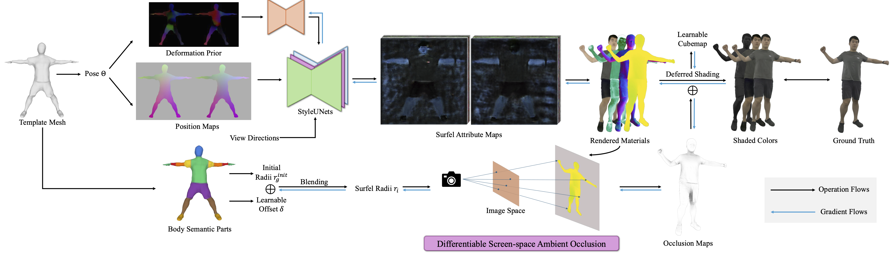
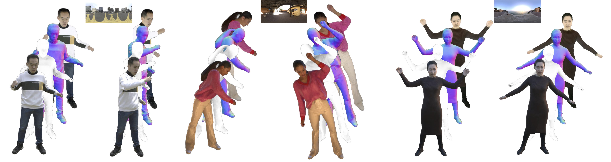
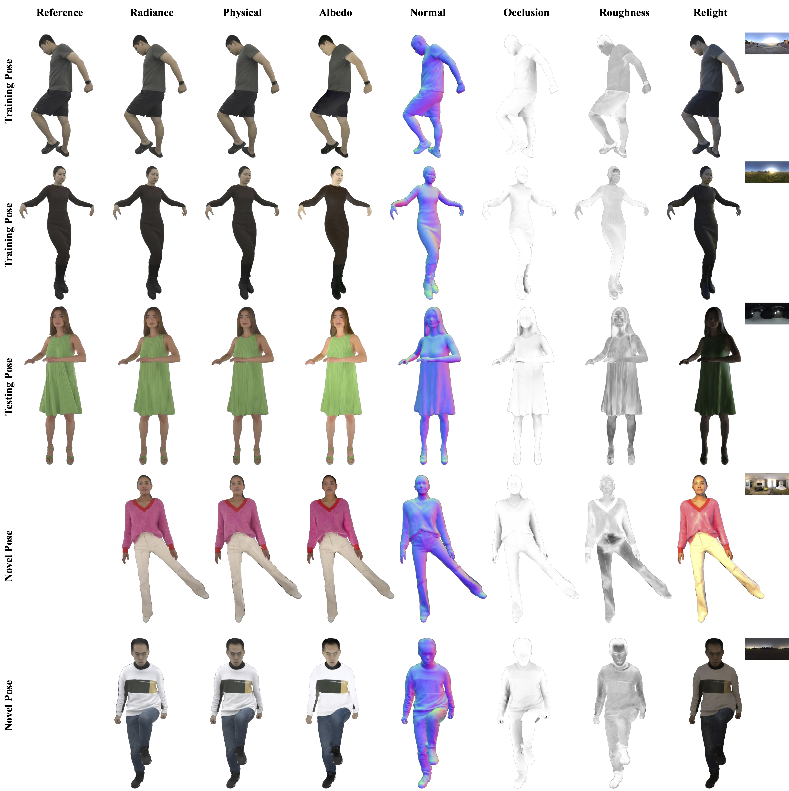
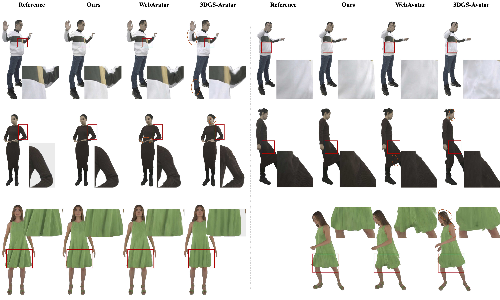
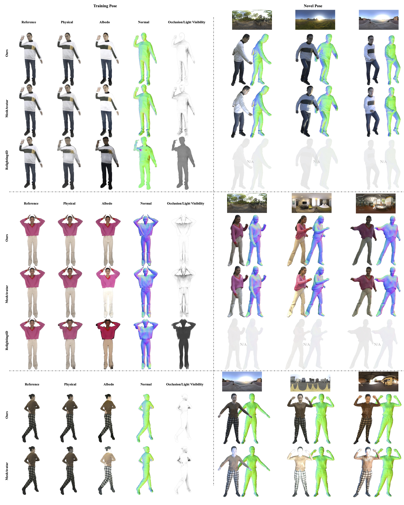
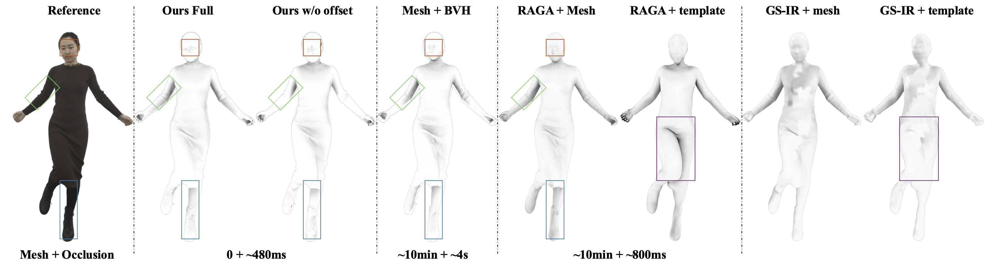
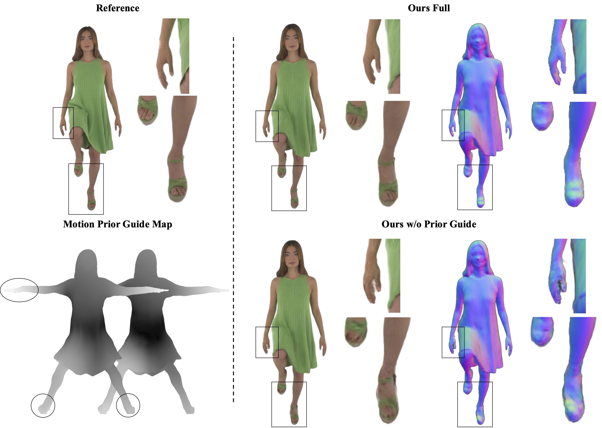
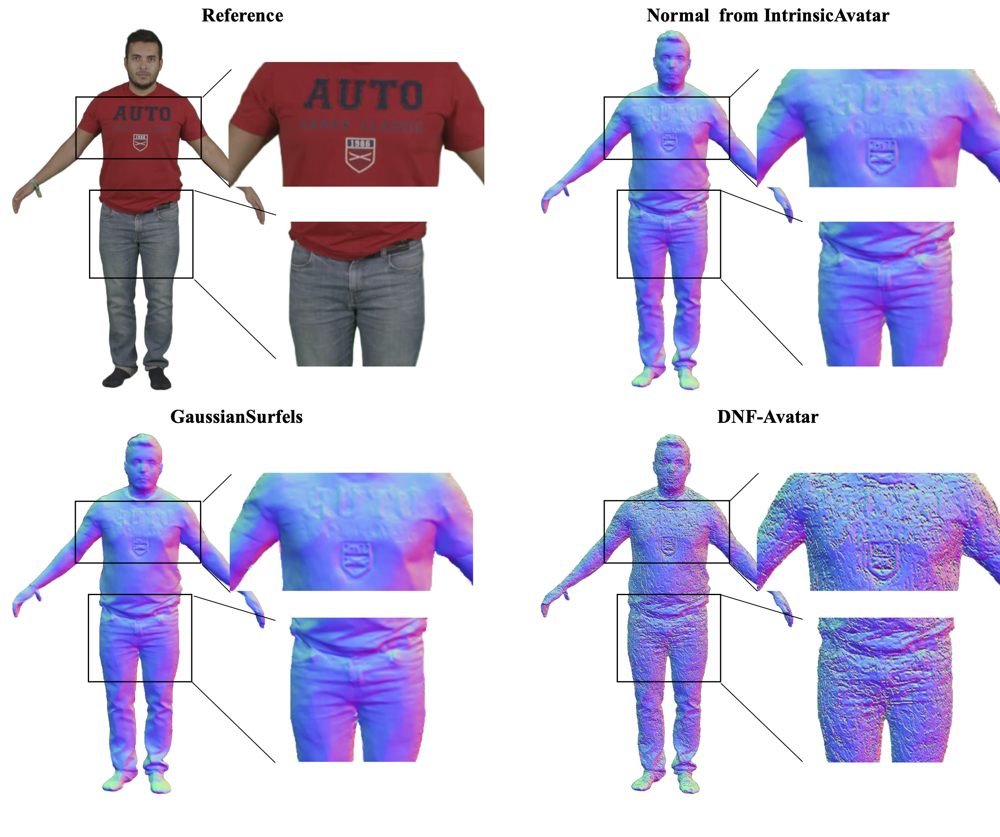

Interactive Comparison
Drag either slider to compare the two sides. Each side can be set to a different actor and map type independently. Arrow keys move a slider once its handle is focused.

Creating animatable and relightable human avatars from multi-view images remains challenging, as pose-dependent deformation, materials, and light visibility are intrinsically coupled in images. In this paper, we present ARS-Avatar, a novel method using surfel representation for high-quality, animatable, and relightable human avatars from multi-view images captured under unknown illumination. We first extract deformation priors from the template mesh and leverage as additional details beyond driving poses to facilitate faithful estimation of surfel attributes and reconstruction of animatable avatar. To support relighting , the deferred shading is employed to estimate BRDF materials. We further introduce a differentiable screen-space ambient occlusion formulation that enables gradient-based optimization of body-part specific occlusion radii through finite differences, providing an efficient approximation of light visibility that can be jointly optimized with the avatar. Extensive experiments demonstrate that ARS-Avatar achieves high-fidelity appearance reconstruction and physically-based material estimation, while enabling realistic animation and relighting under novel poses and illuminations.
Drag either slider to compare the two sides. Each side can be set to a different actor and map type independently. Arrow keys move a slider once its handle is focused.
Novel view synthesis. Rendered results under the captured illumination for a 360° camera trajectory.
Novel view synthesis. Rendered results under the captured illumination for a 360° camera trajectory.
Relighting. The reconstructed avatar re-rendered under novel environment maps while the camera orbits the subject.
Animation. Pose-conditioned deformation driven by unseen motion sequences.







waiting for result